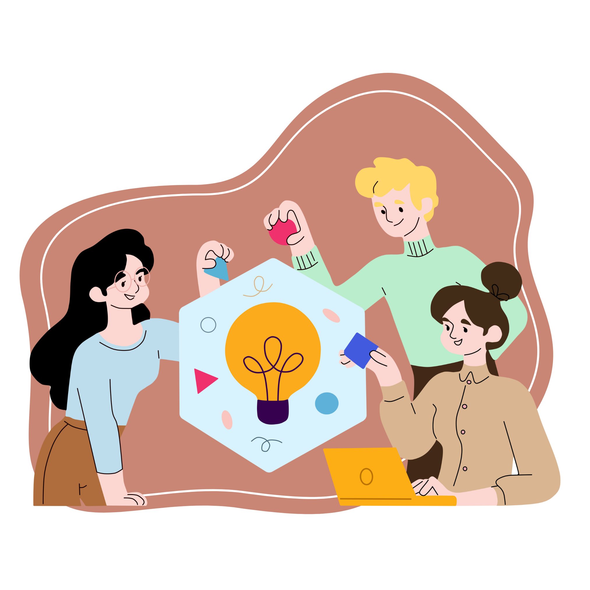
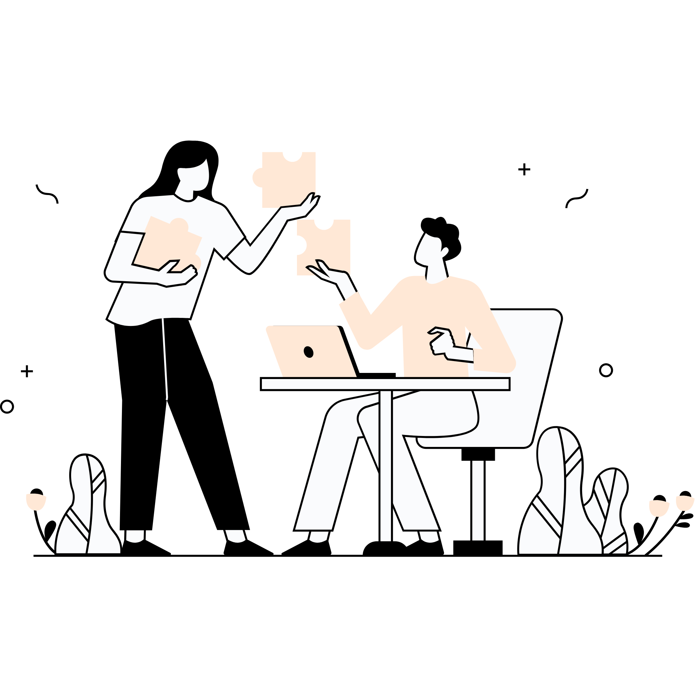

Sejarah Sinz Studio
Pada awal tahun 2010, Sinz Studio Desain lahir dari impian kreatif kami, sekelompok seniman muda dengan visi untuk mengangkat kreativitas ke puncaknya. Fokus awal kami adalah desain grafis untuk media sosial, di mana studio kami dengan cepat menjadi lautan inspirasi dengan tanda tangan berupa ilustrasi hidup, grafik menarik, dan animasi ringan. Seiring berjalannya waktu, kami semakin dikenal sebagai pakar dalam menciptakan identitas merek unik. Logo ikonik dan pilihan warna cerdas kami menjadi ciri khas yang mengubah setiap merek yang dipercayakan kepada kami menjadi karya seni yang memancarkan esensi dan nilai merek kami.
Sinz Studio, tidak hanya membatasi diri pada desain digital, melainkan juga memperluas cakupan ke dunia desain kemasan produk dan interior perusahaan. Setiap produk yang kami kemas tidak hanya sekadar barang dagangan, tetapi juga mencerminkan nilai, kualitas, dan daya tarik yang unik. Seiring dengan kebutuhan akan ruang kreatif, kami merambah ke desain interior, mengubah kantor-kantor menjadi tempat yang memancarkan semangat dan ide segar. Kami tidak hanya menciptakan desain untuk keperluan umum, melainkan juga merangkul keinginan klien untuk memiliki sesuatu yang benar-benar unik, seperti desain produk custom yang menjadi perwujudan dari kreativitas dan kepribadian setiap individu atau perusahaan.
Sinz Studio Desain, melalui perjalanan panjangnya, tak hanya menghadirkan desain grafis yang memukau, tetapi juga menelusuri dunia desain karakter, mulai dari animasi hingga maskot perusahaan. Setiap karakter diciptakan dengan teliti untuk mencerminkan identitas dan cerita klien. Hari ini, studio ini terus menjadi sumber inspirasi, menjadi bukti bahwa kreativitas yang kuat dan hasrat untuk memberikan yang terbaik kepada klien adalah kunci kesuksesan. Sinz Studio Desain, sebuah perjalanan menuju keunggulan seni dan desain yang terus mencipta dan menginspirasi.
Sinz | Design Studio Creative
"Setiap garis dan warna dalam desain adalah potensi untuk merubah dunia – jadikan setiap proyek sebagai peluang untuk menciptakan dampak yang tak terlupakan."
"Keunikanmu adalah kekuatan terbesarmu dalam desain; jangan takut untuk menggali imajinasi dan mengekspresikan visimu dengan penuh keyakinan."
"Percayalah bahwa setiap tantangan dalam desain adalah kesempatan untuk tumbuh. Kreativitasmu adalah kunci untuk menghadapi perubahan dan menciptakan solusi yang memukau."